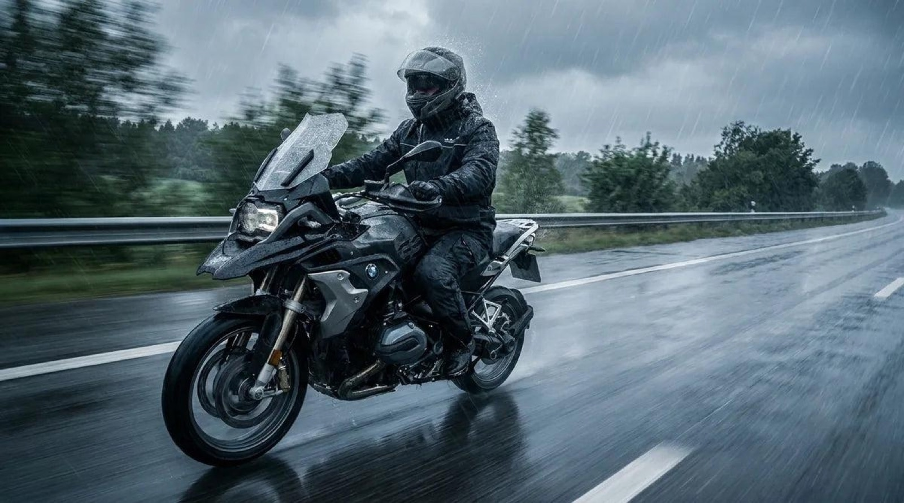
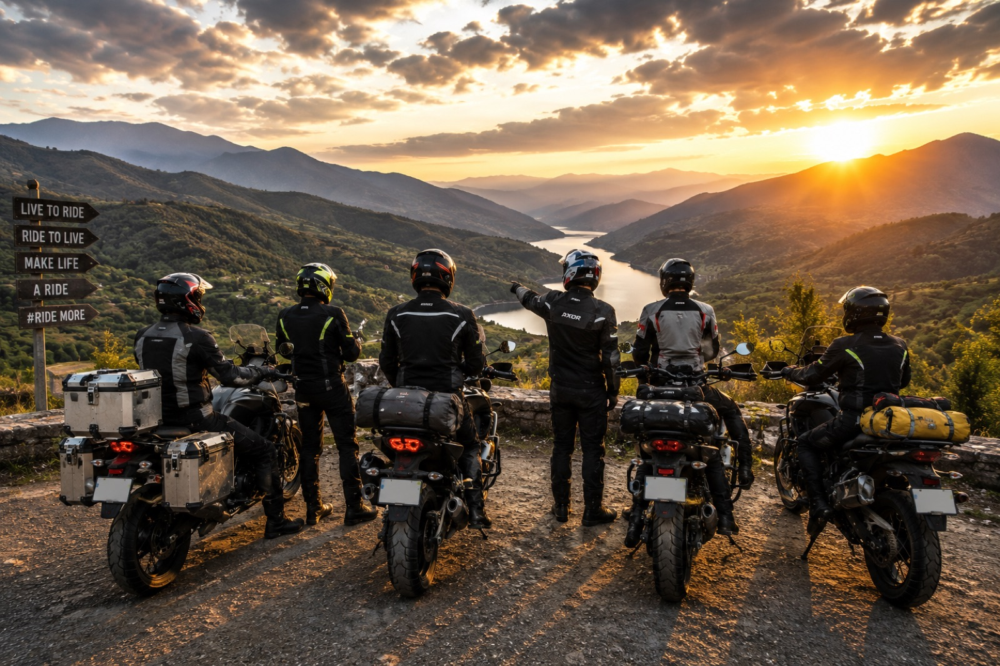
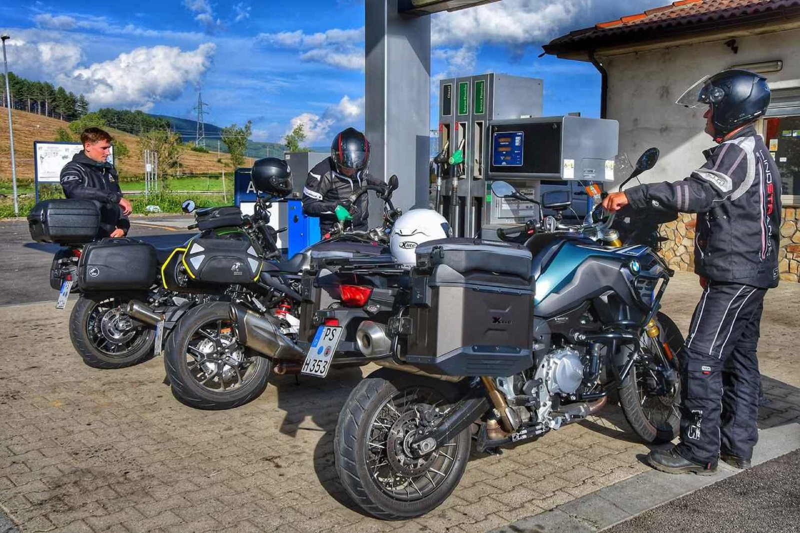

BLOG
From The Road
Stories, tips and riding insights straight from the Rydyt team.

Seasonal Riding & PlanningPlanning a Monsoon Motorcycle Trip
Ride confidently through the rainy season with expert tips on motorcycle preparation, wet-weather riding techniques, route planning, and essential gear for a safe monsoon adventure.
July 14, 2026Read More →
Motorcycle Touring & Long-Distance Riding
Riding in the Mountains
July 14, 2026Read More →

Motorcycle Touring & Long-Distance RidingSingle-Day vs Multi-Day Rides: What Changes?
Planning a motorcycle trip? Discover the key differences between single-day and multi-day rides, including packing essentials, route planning, bike preparation, and safety tips to make every journey smoother, safer, and more enjoyable with Rydyt.
July 14, 2026Read More →

Ride Planning & SafetyManaging Fuel Stops, Breaks, and Rest Stops Efficiently
How to plan fuel stops, rest breaks, and hydration for safer, smoother motorcycle rides. Discover practical tips to reduce fatigue, improve comfort, and enjoy every journey with smart ride planning.
July 14, 2026Read More →
© 2026 RYDYT Labs. All rides reserved.
Privacy Policy · Terms & Conditions